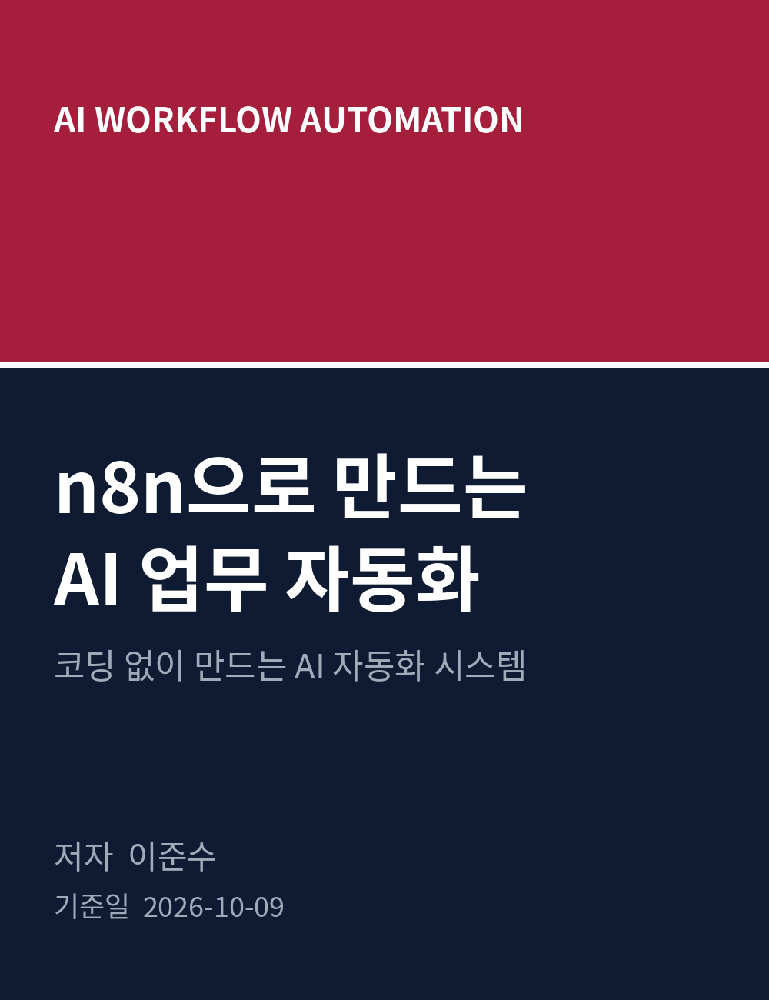
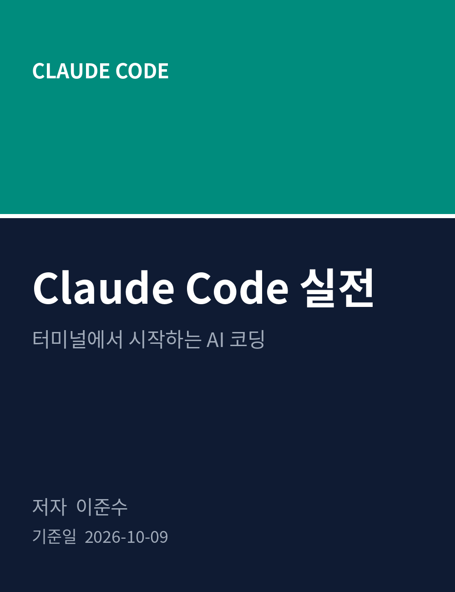
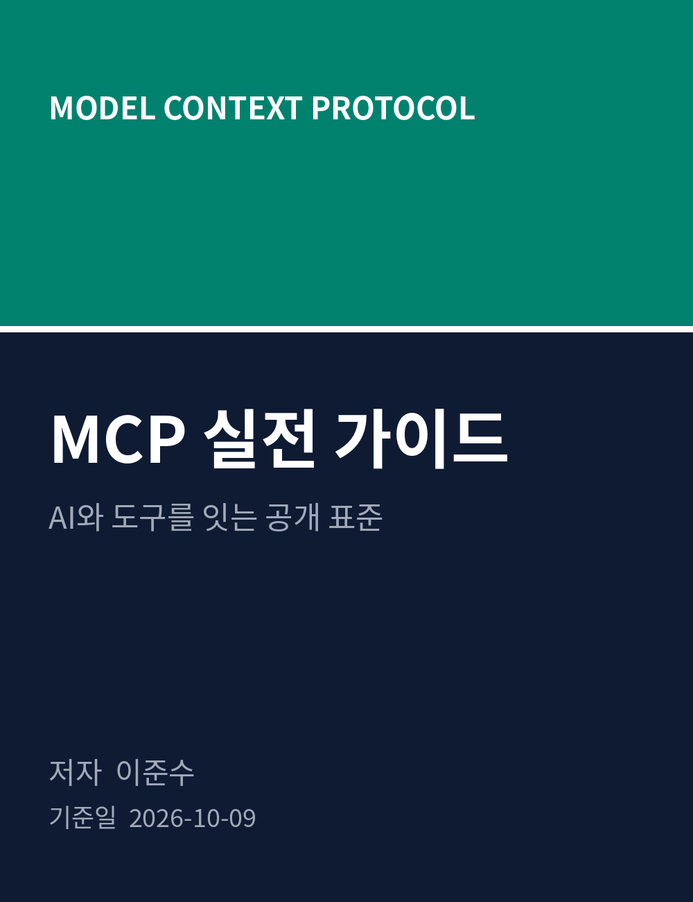

최신 AI 기술을 초급자도 따라할 수 있도록 풀어낸 공개 기술 서적 시리즈입니다.
모든 책은 위키독스에서 무료로 읽을 수 있습니다.
표지를 눌러 위키독스에서 바로 읽을 수 있습니다. 전체 원문은 GitHub에 공개되어 있습니다.



책을 쓰는 사람에 대해
이준수는 AI 기술을 실전에서 쓰는 법을 연구하고 글로 풀어내는 작가입니다. 어려운 개념을 초급자의 눈높이에서 설명하는 것을 중요하게 생각합니다.
AI Innovation Studio와 함께 AI 책을 저술하고 있으며, 위키독스에 GPT·Claude·AI 에이전트 관련 책을 연재하고 있습니다. 모든 책의 원문은 GitHub에 공개되어 누구나 자유롭게 읽고 활용할 수 있습니다.
새 책은 매주 공개됩니다. 인공지능 정보공유 단톡방에서 새 책 소식과 AI 정보를 공유하고 있습니다.
책에 대한 문의, 오탈자 제보, 협업 제안은 언제든 환영합니다.
인공지능 정보공유 단톡방: 참여하기